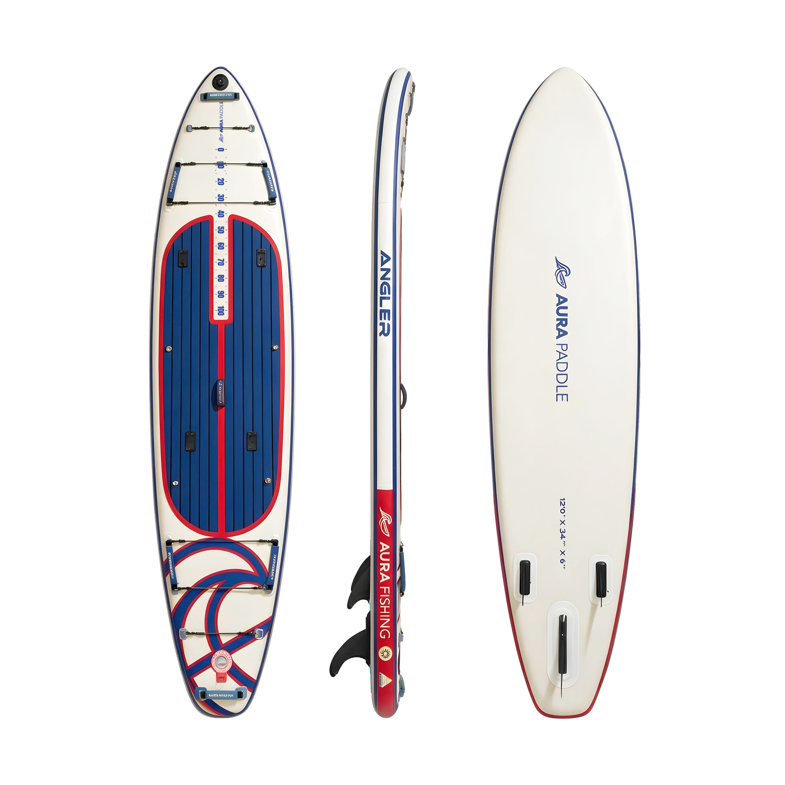
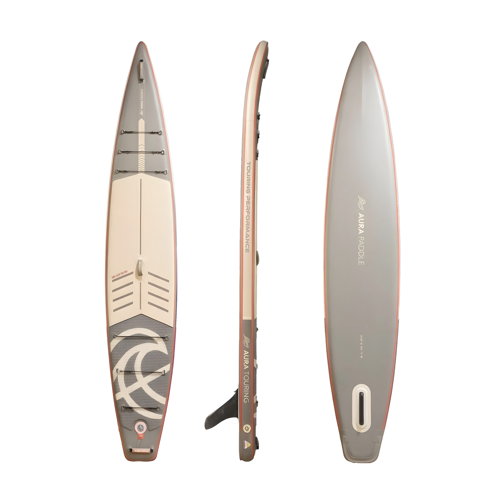

All-round iSUP
CoastGo
A 10'6" all-round inflatable SUP package for first paddles, casual weekends and straightforward storage. The package includes a hand pump.
10'6" × 33" × 6"Maximum capacity 120 kg249 L
Check price & availabilityInflatable SUP boards Australia
Compare four AURA PADDLE iSUP designs: an accessible all-round board, a wide yoga SUP board, a fishing-specific platform and a longer touring shape. Each product page carries the latest price, colour availability and order terms.
What is an iSUP?
“iSUP” is short for inflatable stand up paddle board. Drop-stitch construction lets an iSUP inflate for paddling and deflate for storage or transport. Shape still matters: width supports stability, length influences tracking and glide, and deck layout should match how you plan to paddle.
This collection groups the four genuine inflatable SUP designs in the current AURA range, without treating their different uses as interchangeable.
Current range
A 10'6" all-round inflatable SUP package for first paddles, casual weekends and straightforward storage. The package includes a hand pump.

An extra-wide 11-foot inflatable paddle board for SUP yoga, stability-focused beginners and relaxed family paddling. An electric pump is included.

A 12-foot fishing iSUP with dedicated rod, rack and action-camera mounting points. The electric pump is included; the Fishing Rack is an optional accessory.

A 14-foot touring inflatable paddle board with a narrower outline, V hull and speed tail for tracking and glide. An electric pump is included.
Check current order terms: price, colour availability, payment timing, shipping and dispatch differ by board and can change. Open the relevant product page for the current terms before ordering.
Choosing a SUP board
CoastGo uses a familiar 10'6" × 33" format intended for first paddles and general weekend use.
Yoga Cruiser is the widest board here at 36 inches. Angler Fishing adds higher stated maximum capacity and fishing-specific mounting points.
Touring Performance is the longest and narrowest iSUP in this comparison, prioritising tracking and glide over maximum deck width.